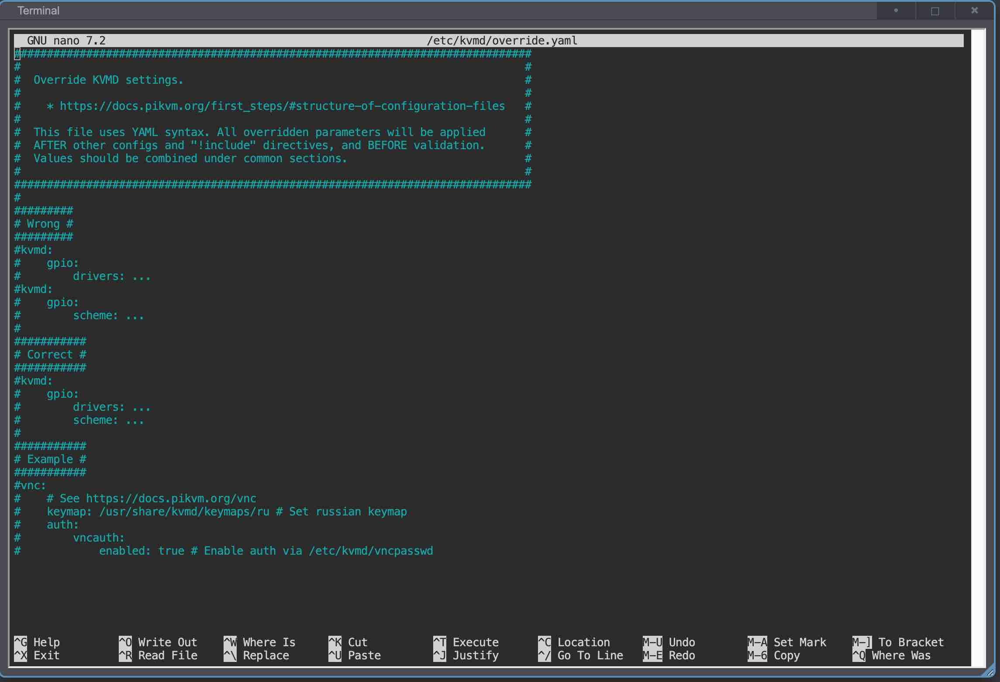
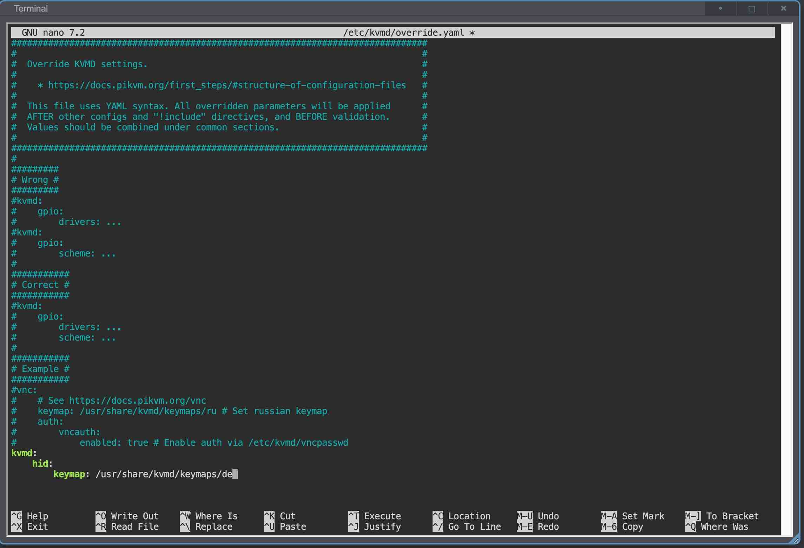

配置指南
PiKVM OS 提供了多种底层参数可供自定义：如 kvmd 守护进程的超时时间、模拟键盘的默认键盘映射、VNC 会话的滚动速率、日志格式等。要修改它们，需通过覆盖默认配置来实现。
PiKVM OS 的配置文件覆盖机制
所有默认配置保存在 /etc/kvmd/main.yaml 中，但切勿直接编辑此文件。若要覆盖默认值，请在 /etc/kvmd/override.yaml 中进行修改。
系统启动时会先加载 main.yaml，然后再合并 override.yaml 中的配置。这种方法能安全分离默认设置与自定义配置。
override.yaml 的格式
-
/etc/kvmd/override.yaml采用标准 YAML 语法，所有配置均以键值对（key-value pairs）形式存储。参考此示例：
file: /etc/kvmd/ipmipasswd -
其中
file是键（配置项名称），冒号后面跟的是它的值/etc/kvmd/ipmipasswd。YAML 支持多级嵌套，例如：
ipmi: auth: file: /etc/kvmd/ipmipasswd请确保使用 四个空格 （勿用制表符进行缩进）。
-
无需复制整个配置树即可修改单个设置。例如仅需修改
timeout设置时，只需包含其父级键 vnc 和 kvmd：vnc: kvmd: timeout: 7.0以
#开头的行会被视为注释，可用于说明修改原因：# 2025-05-08: changed the default timeout to 7.0 after some troubleshooting. vnc: kvmd: timeout: 7.0也可在行尾添加内联注释：
vnc: kvmd: timeout: 7.0 #this seems to work better
下面我们演示如何将默认键盘映射改为德语，仅作示例。
-
编辑
override.yaml使用
nano（或你喜欢的编辑器）打开/etc/kvmd/override.yaml：[root@opi-kvm ~]# nano /etc/kvmd/override.yamlnano提供控制台界面，会在终端中显示文件内容：
滚动至文件底部（使用 Ctrl+End、PageDown 或 ↓ 键），添加：
kvmd: hid: keymap: /usr/share/kvmd/keymaps/de注意使用四个空格进行缩进
-
保存并退出
在 nano 中，按 Ctrl+O 保存，按 Ctrl+X 退出。

^代表 Windows 和 Linux 上的 Ctrl，在 macOS 上代表 Cmd。M代表 Alt。 -
验证配置语法
执行以下命令检查语法错误：
[root@opi-kvm ~]# kvmd -m若写错（如用分号替代冒号），会看到类似错误：
ConfigError: The node 'vnc' must be a dictionary纠正后再次运行，直到不报错为止。
重启 PiKVM
最后，重启设备以使新配置生效：
[root@opi-kvm ~]# reboot
设备重启后，覆盖的设置即刻生效。